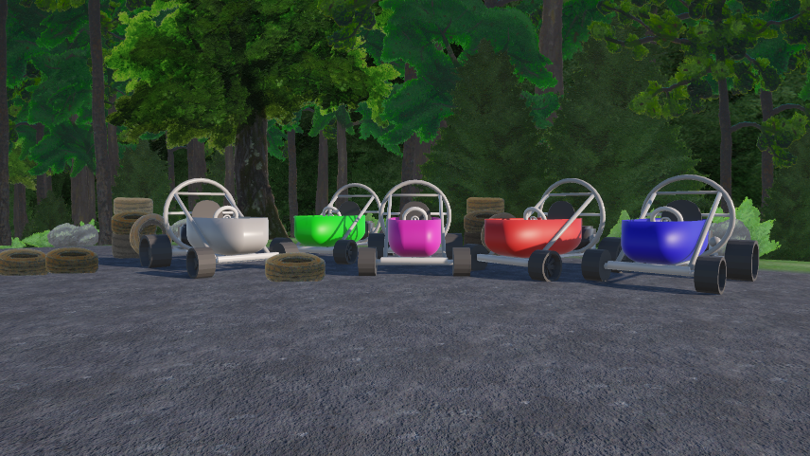
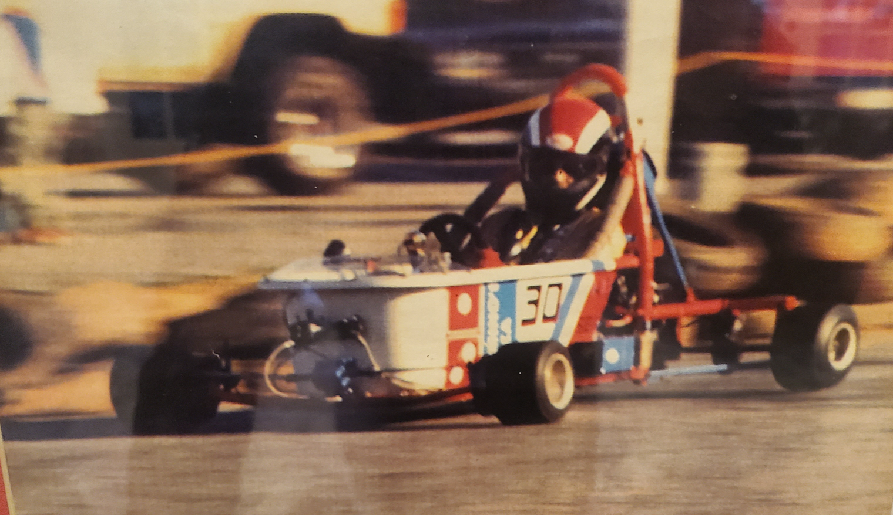

UC-1166
Developed during Fall Semester 2025 at Kennesaw State University under the supervision of Dr. Yan Huang and Will Mckenna for SWE 4724 (Software Engineering Capstone Project).
Presented at C-Day Fall 2025.
Southern Bathtub Race is a video game commemorating the annual Southern Polytechnic State University Bathtub Races held from 1968 - 1991. The player controls a bathtub racer from a 1st-person perspective as they compete against the computer to navigate a racetrack modeled after the SPSU campus of 1991. The environmental assets and textures were created with traditional acrylic painting. The game is intended to replicate the races and student spirit on the SPSU campus for both SPSU alumni and KSU students.
The SPSU bathtub races brought the entire campus together every semester to watch or participate in the event. For engineering students, it was an opportunity to put into practice what they had been learning in their classes. For everyone else, it was a fun day in the sun. Teams of students collaborated to build race karts made from cast iron bathtub (which weighed around 140 pounds) and attached lightweight engines to them, such as those from motorcycles or lawnmowers.
Various sponsors, ranging from local businesses to major companies, financed the teams. In the weeks leading up to the races, there was much to be done. The road looping around campus served as the racetrack and was lined with tires. A temporary bridge was erected to allow pedestrians to safely navigate the campus during the race.
Interested in seeing what the races were like back then? Here's a compilation of recordings.
You can also take a look at the SPSU Digital Archive to view race programs and other memorabilia related to the races.
Project Lead, Front-End Developer, Asset Creator
Majoring in Computer Science & Software Engineering
View on LinkedInLead Programmer, Back-End Developer
Majoring in Software Engineering
View on LinkedInBack-End Developer
Majoring in Software Engineering